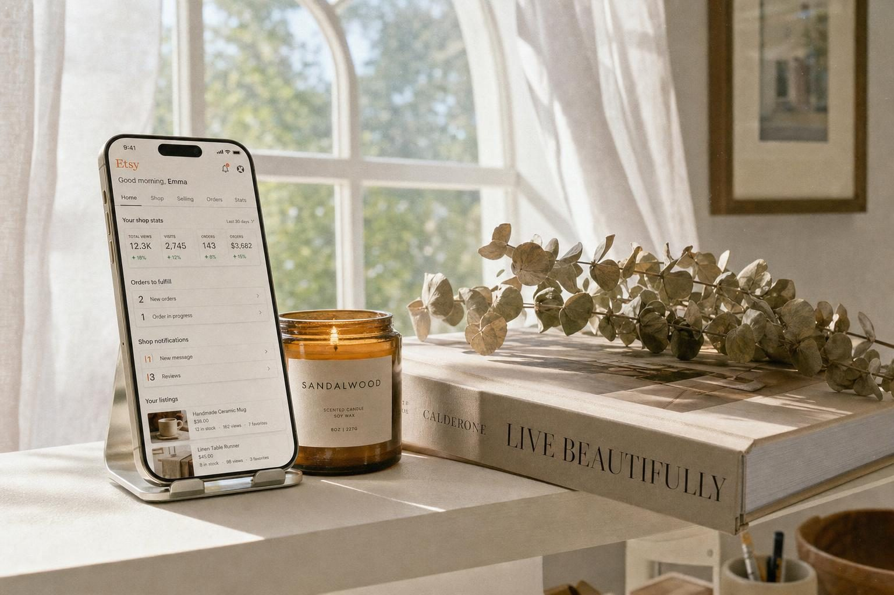
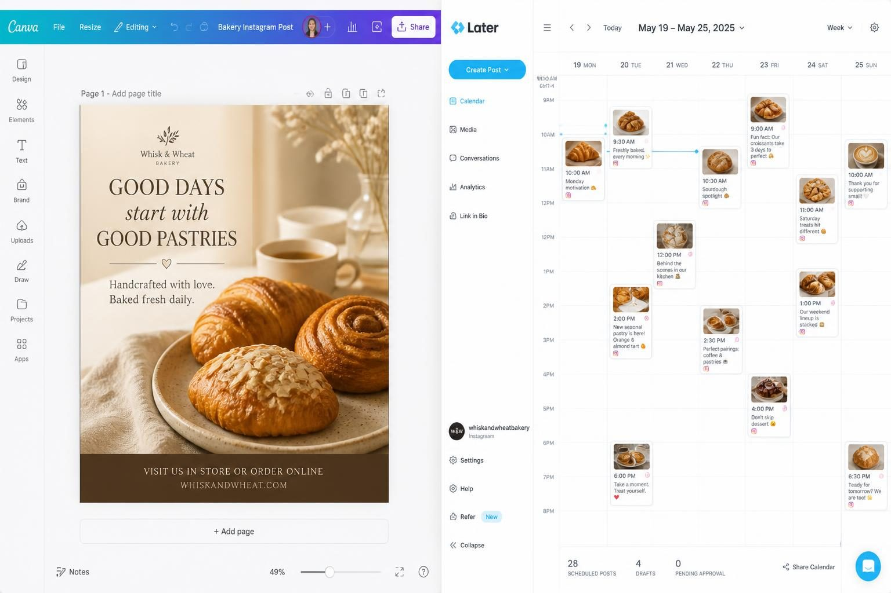
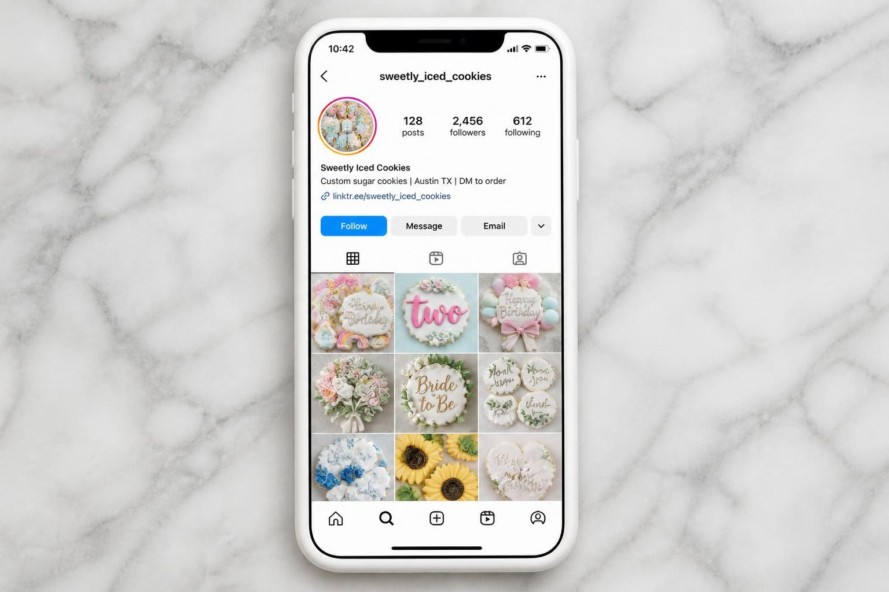
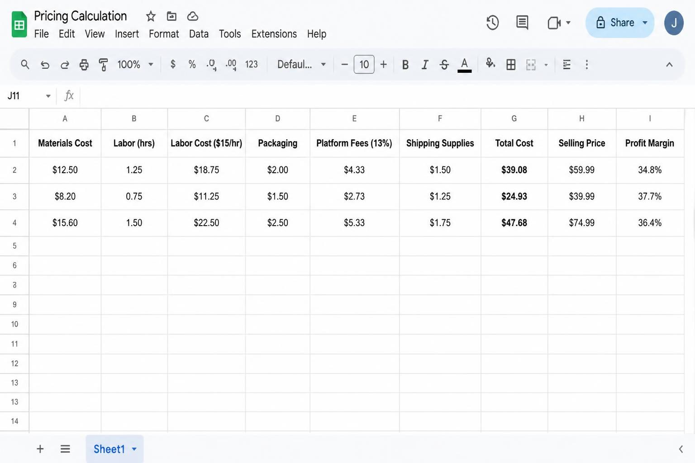
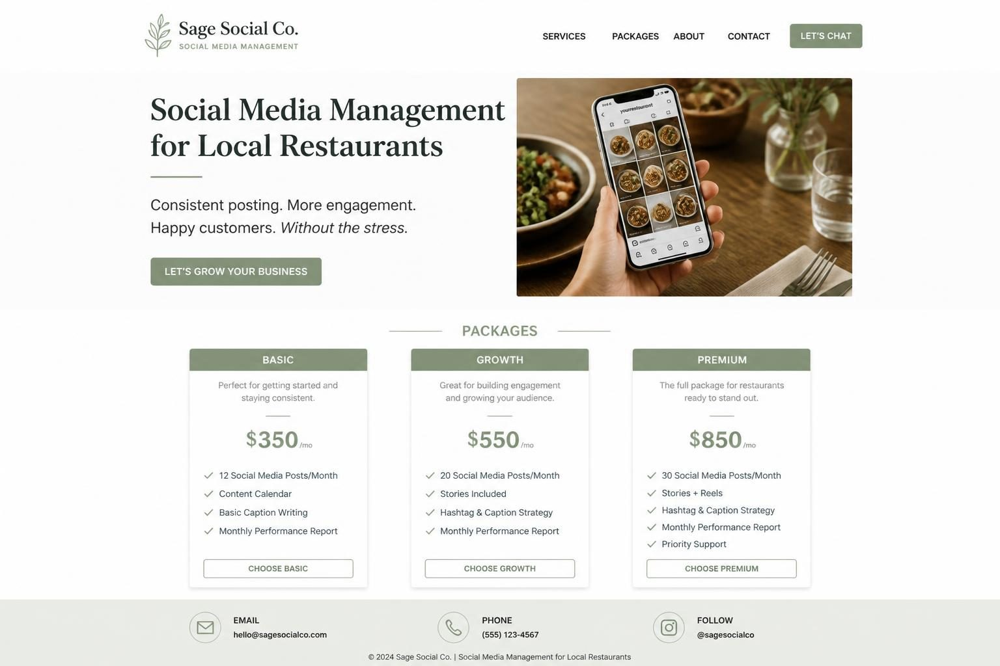

HOME BUSINESS IDEAS FOR WOMEN: 12 REAL OPTIONS YOU CAN START THIS MONTH

The best home business ideas for women share three things: they fit around your real life, they start generating income quickly, and they don't require you to remortgage the house to get going. You've probably seen the lists. Fifty ideas, a hundred ideas, each one more vague than the last. "Start a blog!" "Become an influencer!" Great - but how? And how long before it pays a single bill?
This isn't that kind of list.
I've spent over a decade building a business that started at my dining table. I've watched thousands of women launch businesses through my templates - some who needed income yesterday, some who were building slowly around school runs and nap times. What works isn't complicated. It's specific.
The ideas here fall into two categories: businesses that can pay you within the first few weeks, and businesses that take longer to build but create more passive income over time. I'll tell you which is which. I'll also tell you what it actually costs to start (not the fantasy "$0" figure that ignores your time and tools), where to find your first customers, and what you can realistically earn once you're established.
If you've been stuck in research mode for months, this is your permission to pick one and move.
WHAT ACTUALLY MAKES A HOME BUSINESS WORK FOR WOMEN
Before we get into specific ideas, let's talk about why some home businesses fail while others become genuine income streams.
The businesses that work are the ones designed around your real constraints - not the ones that ignore them.
This sounds obvious, but most business advice is written as if you have eight uninterrupted hours a day and no one asking you for snacks every forty-five minutes. The reality for most women starting a home business is different. You might have two hours while the kids are at school. You might have evenings after your day job. You might have unpredictable pockets of time that shift week to week.
The right business model matches your available time structure:
Can you work in short bursts throughout the day?
Product-based businesses with batched production work well. You can pour candles for twenty minutes, get interrupted, and come back to it.
Do you need focused, uninterrupted blocks?
Service businesses requiring client calls or deep work need protected time. If that's hard to find right now, this might not be the season for a consulting practice.
Is your time more available but your energy limited?
Digital product businesses let you create once and sell repeatedly. The work is front-loaded.
The other factor most lists ignore: what you already have. Your existing skills, equipment, connections, and knowledge aren't starting-point suggestions - they're your actual competitive advantage. Someone who's been doing bookkeeping for ten years has a different best business than someone who's a trained pastry chef.
Stop looking for the "perfect" business idea in the abstract. Look for the intersection of what you know, what you have, and what your life can actually accommodate right now.
SERVICE BUSINESSES YOU CAN START THIS WEEK
Service businesses are the fastest path to income. You're trading time for money - which has a ceiling - but you can start getting paid almost immediately with zero inventory risk.
Virtual bookkeeping
If you understand numbers and have experience with accounting software, small business ideas for womens desperately need you. The opportunity isn't general bookkeeping (competitive, commoditized). It's specialized bookkeeping for a specific type of business.
Tanya spent fifteen years in retail management before starting her bookkeeping business from home. She focuses exclusively on Etsy and Shopify sellers - a niche she understands deeply. She charges $300-500 per month per client, uses QuickBooks Online, and finds clients in Facebook groups where handmade sellers gather. Her specialized knowledge (understanding cost of goods for makers, multi-state sales tax, platform-specific fees) lets her charge premium rates.
What you need to start: Bookkeeping experience, QuickBooks or Xero certification (free courses available), a laptop.
Realistic startup cost: $0-200 (software subscription, possibly a course to fill gaps).
Where to find first clients: Facebook groups for the niche you're targeting, local small business networking events, your existing professional network.
Monthly earning potential once established: $2,000-6,000 with 5-12 clients.
Social media management for local businesses
Local businesses - salons, bakeries, boutiques, restaurants - need help with their Instagram and Facebook but can't afford (and don't need) a fancy agency. They need someone reliable who posts consistently and responds to comments.
Dana manages three local businesses and works about 15 hours per week total. She batches content creation one day per week, schedules everything using Later, and charges $500/month per client. The work is repetitive in the best way - once you understand a client's brand, creating their content becomes fast.
What you need to start: Comfort with Instagram and Facebook, basic Canva skills, organizational systems.
Realistic startup cost: $0-50 (scheduling tool subscriptions).
Where to find first clients: Walk into local businesses you already frequent and notice who has dead or inconsistent social media. Offer to manage it.
Monthly earning potential: $1,500-4,000 with 3-8 clients.

PRODUCT BUSINESSES THAT DON'T NEED A STOREFRONT
Selling physical products from home used to mean maker fairs and consignment shops. Now you can reach customers globally from your spare bedroom - but the logistics matter more than most advice acknowledges.
Resale and thrift flipping
If you have an eye for quality and know where to look, resale is one of the fastest-to-cash business models. You buy undervalued items (estate sales, thrift stores, clearance sections) and sell them for a profit on Poshmark, eBay, Depop, or Facebook Marketplace.
Sarah focuses specifically on vintage denim - mainly Levi's and designer brands. Her "studio" is a white sheet and ring light in her garage. She started with a $50 sourcing budget, now ships 15-20 items per week using flat-rate mailers she stores under her stairs. Specialization is the key - she's built expertise and a reputation in one specific category instead of trying to flip everything.
What you need to start: Storage space for inventory, smartphone for photos, knowledge of what sells in your chosen category.
Realistic startup cost: $50-300 for initial inventory.
Where to find first sales: Poshmark, Depop, eBay, Facebook Marketplace.
Monthly earning potential: $500-3,000 depending on volume and category.
Handmade products (candles, soap, home goods)
The candle and home goods market isn't oversaturated - it's just full of undifferentiated products. Makers who succeed have a clear point of view, consistent branding, and have done the math on whether their pricing actually makes money.
Reena makes soy candles in her laundry room. She sells on Etsy and wholesales to two local boutiques. She batches production on Sundays, uses Pirate Ship for discounted shipping labels, and stores inventory in labeled bins. Her biggest lesson: calculate materials + labor (pay yourself at least $15/hour) + overhead + shipping + platform fees BEFORE setting prices. Too many makers price emotionally and wonder why they're exhausted but not profitable.
What you need to start: Space for production and storage, knowledge of your skill, understanding of platform fees and shipping costs.
Realistic startup cost: $200-800 for materials, supplies, packaging.
Where to find first sales: Etsy (lowest barrier), local markets, approaching local boutiques for wholesale.
Monthly earning potential: $1,000-5,000+ depending on price point and volume.
Before starting a product business, check your local regulations. Search "[your state] + home occupation permit" to understand zoning rules. For food products, search "[your state] cottage food law" - many states allow home bakers to sell up to $50,000-75,000/year without a commercial kitchen.
HOME BAKING AND COTTAGE FOOD BUSINESSES
If you love to bake and people constantly tell you to sell your cookies, this might actually be viable - but the logistics and legalities matter.
Custom cookies and baked goods
Jasmine sells decorated sugar cookies for birthdays, holidays, and events. Her state's cottage food law allows up to $75,000/year in sales without a commercial kitchen. She takes orders via Instagram DMs, requires a 50% deposit via Venmo, and does local pickup only (no shipping perishables). Peak seasons - Valentine's Day, graduation, Christmas - book out six weeks in advance.
This business works because she:
- Knows exactly which items she can legally sell from home (check your state's specific list)
- Has clear order policies that protect her time
- Focuses on local customers she doesn't have to ship to
- Markets through one platform consistently rather than spreading thin
What you need to start: Baking skills, knowledge of your state's cottage food regulations, designated kitchen workspace, food-safe packaging.
Realistic startup cost: $100-500 for packaging, ingredients, and any required permits.
Where to find first customers: Personal network (post on your own social media), local Facebook groups, word of mouth.
Monthly earning potential: $500-3,000+ depending on your pricing and capacity.

Important legal note: Cottage food laws vary dramatically by state. Some allow only baked goods; others include jams, honey, or candy. Some require specific labeling. Some have sales caps. Check your state's exact requirements before selling a single cookie.
DIGITAL PRODUCTS THAT GENERATE PASSIVE INCOME
Digital products take more time upfront but create income that doesn't require your ongoing labor for every sale. You build it once, then focus on marketing.
Canva and Notion templates
Keisha creates budget planners and business trackers as Notion templates. She sells on Gumroad and her own website. After the initial creation time (she spent about 20 hours building her first product suite), each sale is almost entirely profit. She promotes through TikTok tutorials showing how she uses the templates herself.
The key to template success isn't just making something pretty - it's solving a specific, frustrating problem for a specific group of people. "Budget planner" is too broad. "Budget planner for freelancers who get paid irregularly" is a product.
What you need to start: Proficiency in Canva, Notion, or similar tools. Understanding of your target customer's actual problems.
Realistic startup cost: $0-50 (Canva Pro subscription, Gumroad is free until you sell).
Where to find first sales: Pinterest, TikTok tutorials, Etsy, your own website.
Monthly earning potential: $300-5,000+ depending on product suite size and marketing effort.
Printable downloads
Similar to templates but focused on items people print at home or at a print shop: wall art, planners, checklists, kids' activities, organizational printables.
This market is crowded on Etsy, so success requires either strong design skills, a very specific niche, or (ideally) both. A generic "weekly planner" competes against thousands of others. A "meal planning system for families with food allergies" has a specific buyer who will search for exactly that.
What you need to start: Canva or design software skills, understanding of print specifications (DPI, bleed, color profiles).
Realistic startup cost: $0-50.
Where to find first sales: Etsy, Pinterest driving traffic to your own shop, Teachers Pay Teachers (for educational printables).
Monthly earning potential: $200-3,000+ depending on catalog size.
If you're building digital products, you'll eventually need somewhere to send customers beyond Etsy. Your own website lets you keep more of each sale and build an email list of buyers. The premade Wix website templates at Switzertemplates give you a professional site ready to customize in a day - no building from scratch.
ONLINE SERVICES THAT SCALE BEYOND ONE-TO-ONE
The limitation of pure service businesses is that your income caps when you run out of hours. These models start as services but can evolve into something more scalable.
Online course creation
If you have expertise in anything people want to learn - photography, cake decorating, business systems, parenting strategies, fitness, hands-on techniques - you can teach it once and sell access repeatedly.
The mistake most people make: trying to teach everything they know. Better approach: identify the single biggest transformation you can help someone achieve, then build a focused course around just that outcome.
What you need to start: Expertise in a teachable skill, basic tech comfort (screen recording, course platforms), willingness to be on camera or create engaging audio content.
Realistic startup cost: $0-500 (course platforms have free tiers, recording can be done with your phone initially).
Time to first income: 2-6 months to create and launch. This is not a quick-cash option.
Where to find first students: Existing audience (email list, social following), paid ads, affiliate partnerships.
Monthly earning potential: $500-10,000+ depending on price point and audience size.
Coaching and consulting
If you've solved a problem in your own life or career, others will pay you to help them solve it faster. Life coaching, business coaching, health coaching, career coaching, relationship coaching - the market is large because the need is constant.
The challenge: coaching has almost no barrier to entry, which means lots of untrained people calling themselves coaches. What sets successful coaches apart is specificity (who exactly do you help?) and proof (what results have you helped people achieve?).
What you need to start: Expertise, either from lived experience or training. A clear niche. A way for potential clients to find you.
Realistic startup cost: $0-2,000 depending on whether you pursue certification.
Where to find first clients: Existing network, content marketing (podcast guest appearances, social media), referrals.
Monthly earning potential: $2,000-15,000+ depending on pricing and client load.
SETTING UP YOUR HOME BUSINESS LEGALLY
This is the section most business-idea lists skip because it's boring. But ignoring it creates real problems later.
Business structure: start simple
For most home businesses, start as a sole proprietor. It's free - you're automatically a sole proprietor the moment you start doing business. You use your Social Security Number for taxes. This is fine for low-risk businesses where you're the only employee.
If you're using a business name that isn't your personal name, file a DBA ("Doing Business As") with your county clerk's office. This typically costs $10-50.
Consider forming an LLC later when you have consistent income and want legal protection between your business and personal assets. For now, don't let paperwork paralysis stop you from starting.
Separate your finances immediately
Open a free business checking account before you make a single sale. This isn't about the IRS requiring it (sole proprietors can technically use personal accounts) - it's about your sanity at tax time and your protection if anything ever goes wrong.
Many banks offer no-fee business checking. Walk into any branch and ask.
Home occupation permits and zoning
This is where people get caught off guard. Many cities and HOAs have rules about running businesses from residential addresses.
Search "[your city] home occupation permit" to find your local requirements. Common restrictions include:
- No client visits to your home (service providers take note)
- No exterior signage
- No employees working at your residence
- Limits on inventory storage
- No manufacturing that creates noise, smell, or traffic
For many home businesses (virtual services, digital products, small-scale handmade goods), these restrictions won't affect you. But check before you start manufacturing candles in industrial quantities or expecting clients to show up for appointments.
Insurance
Your homeowner's or renter's insurance probably doesn't cover business activities. If a customer trips on your walkway picking up their cookie order, that might not be covered.
Look into:
- Business owner's policy (BOP) for general coverage
- Professional liability insurance if you're giving advice (coaching, consulting)
- Product liability insurance if you're selling physical products people consume or use
This isn't day-one urgent for most small home businesses, but it should be on your 90-day checklist.
THE REAL COST OF "FREE" BUSINESSES
Let's be honest about something: there's no such thing as a $0 startup.
Even "free" businesses cost:
- Your time (which has value even if no one's currently paying for it)
- Learning curves (hours spent figuring out platforms, techniques, systems)
- Tools you probably already have but would need to replace if they broke (laptop, phone, internet)
- Opportunity cost (the other things you could be doing with those hours)
The honest framing isn't "zero cost" - it's "low barrier." You don't need thousands of dollars or years of preparation. But pretending these businesses are free sets you up to undervalue your work and underprice your offerings.
Here's what "low cost" actually means for different business types:
Service businesses: $0-200 upfront. Your main investment is time building skills and finding clients. Ongoing costs are minimal (software subscriptions, maybe a Canva Pro account).
Digital product businesses: $0-100 upfront. Creation is free if you already have the tools. Ongoing costs are platform fees (Etsy takes a cut, course platforms have monthly fees).
Physical product businesses: $100-1,000 upfront depending on your product. You need materials, packaging, shipping supplies. This is real inventory risk - money tied up before you've sold anything.
Food businesses: $100-500 upfront for ingredients, packaging, and any required permits or licenses. Ongoing costs are per-order supplies.
Budget honestly. Price accordingly. Don't pretend your time is worthless just because no one's paying for it yet.

HOW LONG BEFORE YOU SEE REAL INCOME
This is the question everyone wants answered but few lists address honestly.
Week one potential: Resale businesses. If you source inventory today and list it tonight, you could have cash in your account by next week. This is the fastest path to actual money.
First month potential: Service businesses with existing networks. If you already know people who could hire you (former colleagues, friends of friends, local business owners), you can book clients almost immediately. If you're starting from scratch with no network, add 2-3 months.
2-3 month potential: Product businesses with established platforms. If you're selling on Etsy, Poshmark, or other marketplaces, the platform brings you some traffic. Building sales velocity takes time, but first sales often come within weeks.
3-6 month potential: Digital products. Creating the product takes time. Then you need to market it. Then people need to find it. This is a longer game but compounds over time.
6-12 month potential: Coaching and course businesses. Building an audience, establishing credibility, creating content that demonstrates your expertise - none of this is instant. If someone promises you a six-figure coaching business in 90 days, they're selling you something.
The businesses that pay fastest (services, resale) trade time for money and cap your income eventually. The businesses that take longer (digital products, courses) can generate more passive income once they're established.
Choose based on what you need right now. There's no shame in starting with a faster-cash model while you build something bigger on the side.
STEP-BY-STEP: YOUR FIRST 30 DAYS FROM IDEA TO INCOME
Stop researching. Pick one idea from this list - the one that best matches your skills, your available time, and your current life constraints. Then do this:
Week 1: Validate and prepare
1. Write down what you're selling and who specifically would buy it. "Social media management for local restaurants in [your city]" is specific. "Marketing services" is not.
2. Check basic legal requirements. Search your state + home occupation permit and any industry-specific regulations. For food, search your state + cottage food law.
3. Talk to five potential customers. Not to sell - to ask questions. What are they struggling with? What have they tried? What would they pay? Real conversations beat assumptions.
4. Open a free business checking account. Separate your money before there's money to separate.
Week 2: Build your foundation
5. Create your offer. For services: what exactly do you do, what's included, what's the price? For products: what are you selling, what's the price, how do they buy?
6. Set up your sales channel. This doesn't have to be elaborate. A simple Carrd website ($19/year), an Etsy shop, or even a Google Form can work to start.
7. Calculate your pricing using real numbers. Don't guess. Don't undercharge because you feel weird about asking for money. Your price should cover costs + your time (at a real hourly rate) + profit margin.

Week 3: Tell everyone
8. Post on your personal social media that you're now offering [your thing]. Personal network sales aren't cheating - they're how most home businesses get traction.
9. Reach out directly to 10 potential customers. DMs, emails, texts to people you know, walking into local businesses if that fits your model. Most people won't say yes. Some will.
10. Create one piece of content showing your work or expertise. A before/after, a tutorial, a behind-the-scenes look. This builds trust.
Week 4: Get your first sale
11. Offer a small discount or bonus to your first 3 customers in exchange for a review or testimonial. Social proof accelerates everything.
12. Deliver excellent work for your first customers. Overdeliver. Their referrals and reviews will fuel your growth.
13. Document what's working. Note where your customers are finding you, what questions they ask, what objections they have. This shapes everything that comes next.
If you get through these 30 days and still don't have a sale, you've learned something valuable about either your offer, your audience, or your marketing. Adjust and keep going.
WHY YOUR HOME BUSINESS NEEDS A REAL WEBSITE
At some point, you'll outgrow DMs and marketplace platforms. Potential clients will Google you. Customers will want to see more before they buy. Wholesale accounts and collaborators will check if you're legitimate.
Your website is the one place online you actually own. Instagram can change its algorithm tomorrow (it will). Etsy can raise fees (it does). A website works for you 24/7, builds credibility, and gives you control over the customer experience.
You don't need something elaborate. A clear homepage, a services or products page, and a way to get in touch. That's enough to build real credibility.
FREQUENTLY ASKED QUESTIONS
What is the easiest business to start from home for a woman?
Resale (thrift flipping) is the fastest to start and requires the lowest skill barrier - if you can spot quality items and take decent photos, you can start generating income within your first week. Service businesses like social media management or virtual assistance are also quick to launch if you already have the skills.
How can a woman start a small business with no money?
Focus on service-based businesses where you sell your existing skills - social media management, bookkeeping, virtual assistance, tutoring, coaching. These require no inventory and minimal tools (just a laptop and phone you probably already own). Your first investment is time, not money.
What is the most profitable home business?
Profitability depends more on your pricing strategy and business systems than the business type itself. That said, coaching and consulting typically have the highest profit margins (80-90%) because there's no inventory cost. Digital products scale well because each additional sale costs almost nothing to fulfill. Product businesses have lower margins due to materials and shipping.
Can I really run a business from home while caring for kids?
Yes, but the business model matters. Product businesses with batched production (candles, baked goods, handmade items) work well in fragmented time - you can pour candles for twenty minutes, get interrupted, and come back to it. Service businesses requiring client calls need protected, focused blocks of time. Be honest about what your current life allows and choose accordingly.
Do I need to register my home business?
You're automatically a sole proprietor the moment you start conducting business. If you're using a business name other than your legal name, you'll need to file a DBA (usually $10-50 at your county clerk's office). Forming an LLC isn't required to start but offers legal protection as you grow.
How do I find my first customers for a home business?
Your personal network is the fastest path - post on your own social media, tell friends and family, reach out to former colleagues. For local services, walk into businesses that could use your help. For products, Etsy and Facebook Marketplace bring you built-in traffic. Stop waiting to be found and start telling people what you offer.
TURNING A HOME BUSINESS INTO A REAL INCOME STREAM
Finding the right home business ideas for women isn't about uncovering some secret opportunity no one else knows about. It's about matching your actual skills and constraints to a business model that makes sense - then doing the unglamorous work of showing up consistently.
The women I've watched build successful businesses from home share a few things in common. They started before they felt ready. They picked something specific instead of trying to do everything. They told people what they were offering instead of waiting to be found. And they kept going through the slow season when it felt like nothing was working.
Your home business doesn't have to change the world. It just has to work - for your bills, your schedule, and your life.
Pick one idea from this list. The one that made you think "I could actually do that." Then take the first step this week. Not all the steps. Just the first one.
Your business is waiting. So is your first customer.
Let me know in the comments below if you want me to cover any branding or marketing topics in more depth, and I'll make sure to create a blog post about it in the future.
If you want Pinterest to drive consistent traffic to your business — without spending months learning pin strategy yourself — Jane's done-for-you Pinterest marketing service handles strategy, pin creation, and scheduling so you can focus on running your business.
Related reading: online business ideas for women · side business ideas for women